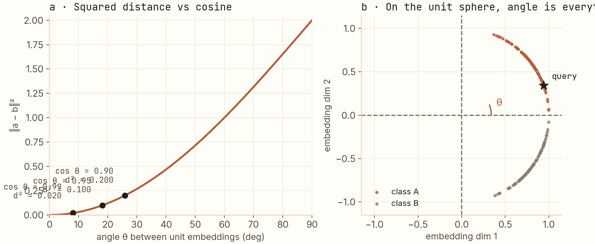
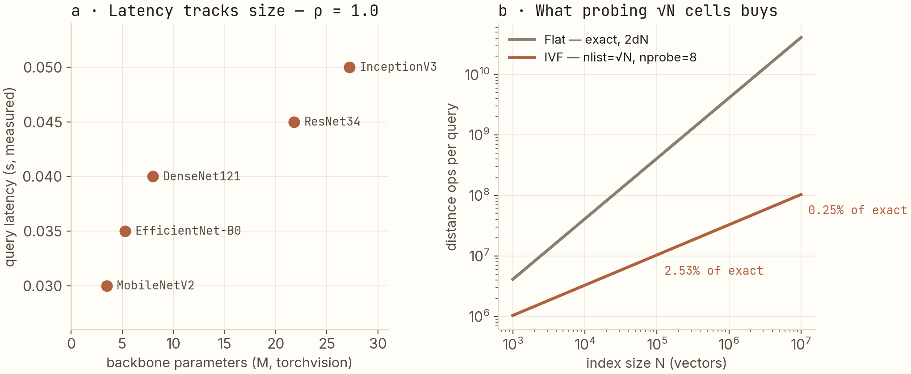

Image search is geometry before it is learning.
I benchmarked five CNN backbones on the same FAISS pipeline and every one of them scored precision 1.0000. The interesting parts — why cosine and L2 are the same metric, what P = 1.00 with R = 0.87 diagnoses, and when exact search dies — need no training at all. They're geometry and arithmetic.
L2-normalize your embeddings and nearest-neighbor under L2 is provably the same ranking as cosine similarity — the proof is two lines. Precision 1.0000 across all five backbones while recall spans 0.85–0.875 means every miss is a ranking miss, not a retrieval failure. And exact search dies on arithmetic you can do on paper: 4×10⁸ distance ops per query at 100K × 2048-d, vs 2.5% of that with IVF.
The system, in one breath
A content-based image retrieval pipeline — my build of "Google Lens" — is three steps: run a CNN, take the penultimate-layer embedding, search a FAISS index for nearest neighbors. I put five backbones through the identical harness:
| Backbone | Precision | Recall | F1 | Latency (s) |
|---|---|---|---|---|
| ResNet34 | 1.0000 | 0.8500 | 0.9189 | 0.045 |
| MobileNetV2 | 1.0000 | 0.8700 | 0.9302 | 0.030 |
| EfficientNet-B0 | 1.0000 | 0.8600 | 0.9241 | 0.035 |
| DenseNet121 | 1.0000 | 0.8550 | 0.9220 | 0.040 |
| InceptionV3 | 1.0000 | 0.8750 | 0.9333 | 0.050 |
Two rows of that table look boring and are actually the two most informative numbers in the experiment. The rest of this post is about why.
Theorem 1: after normalization, L2 and cosine agree
Almost every retrieval stack L2-normalizes embeddings, then searches with L2 distance — while everyone talks about cosine similarity. These are the same thing, and the proof is two lines. For unit vectors a, b:
‖a − b‖² = ‖a‖² − 2a·b + ‖b‖² = 2 − 2·cos θ
Squared L2 distance is a strictly decreasing function of cosine similarity. Ranking by one is ranking by the other — argmin over L2 is argmax over cosine, no exceptions, no approximations. Some numbers to make the mapping concrete:
- cos θ = 0.90 → ‖a − b‖² = 0.200
- cos θ = 0.95 → ‖a − b‖² = 0.100
- cos θ = 0.99 → ‖a − b‖² = 0.020

The practical consequence: normalize once, at index time, and never think about the metric again. It also frames what training actually does — not "learn similarity," but arrange directions on the sphere so that same-class images subtend small angles. Every retrieval metric you'll ever compute is a statement about that geometry.
Theorem 2: P = 1.00 with R < 1 is a diagnosis
All five backbones scored precision exactly 1.0000 while recall sat between 0.85 and 0.875. From the definitions:
P = TP / (TP + FP), R = TP / (TP + FN)
P ≡ 1.0000 means zero false positives in every returned set, for every model — whatever crossed the similarity threshold was always the right class. The embedding geometry is clean; nothing is mixed in. R = 0.85–0.875 then means 12.5–15% of same-class images fell below the cut. All error is FN, none is FP — so the misses are ranking misses: true neighbors exist in the index but score below the threshold. The fixes follow directly, and none of them is "train a better classifier": return more neighbors (raise k), widen the threshold and accept the precision you can afford, or improve the embedding's within-class compactness.
This is why I read the P/R pair before any accuracy number: the shape of the error tells you which knob to turn. A system with P = 0.9, R = 0.9 has a completely different disease than mine at P = 1.0, R = 0.87, even though F1 looks similar.
The arithmetic that kills exact search
My lab-scale index runs exact (Flat) search — brute-force distance to every vector. That's a luxury, and the math says exactly how long the luxury lasts. For N vectors of dimension d:
- Memory: N × d × 4 bytes. At 100K × 2048-d: 819 MB (409 MB in FP16).
- Compute per query: 2Nd ≈ 4.1 × 10⁸ multiply-adds.
Both scale linearly in N, and neither cares how good your GPU is for long. Approximate search (IVF) buys back the arithmetic with a cluster index: partition into nlist cells, probe only nprobe of them. With the standard heuristic nlist = √N and nprobe = 8, you scan 8√N vectors instead of N — at N = 100K that's 2.5% of the work; at N = 10⁷ it's 0.08%. The trade is recall, and it is tunable and measurable: nprobe is a dial between exact-quality and 8√N cost.

Two footnotes from the left panel. First, latency ordering (MobileNetV2 → InceptionV3) tracks parameter count exactly — rank correlation 1.00 — because at this scale the CNN forward pass dominates; the FAISS lookup is a rounding error. Second, that makes the backbone choice a real engineering decision: InceptionV3 buys +0.5 pp of recall over MobileNetV2 for 67% more latency. Whether that trade is worth it is a product question — and now it's a quantified one.
Same math, bigger scale
Everything above transfers unchanged to the LLM side of my work. The RAG system I run at Griphic retrieves over 10K+ documents with 512-d embeddings: same normalization, same equivalence, same recall-versus-cost dial. Retrieval quality is a system property — the metric definition, the index arithmetic, and the eval harness are the parts you own. The model is one ingredient.
Reproduce
git clone https://github.com/anubhavagr/find-me-lens
cd find-me-lens
pip install -r requirements.txt # torch, torchvision, faiss-cpu (or faiss-gpu)
# index a folder of class-organized images, then evaluate all 5 backbones
python evaluate.py --backbones resnet34 mobilenet_v2 efficientnet_b0 densenet121 inception_v3The eval prints the table above, per model. Swap in your own image folders — the class-directory layout is the only convention.
Next: 99.6% accuracy, completely useless → Repo on GitHub Get in touch